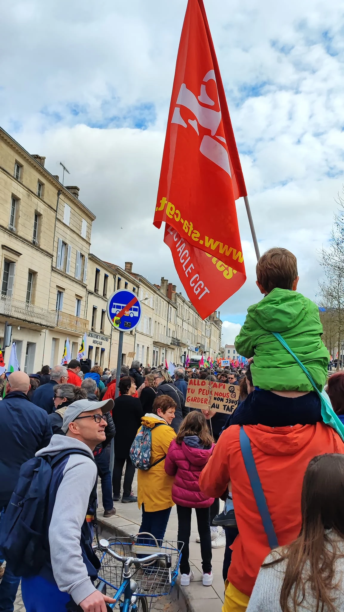

Publication d’archives
Encore une Forte mobilisation pour cette 8ème journée de mobilisation contre la réforme des retraites.
Date indiquée par Facebook · 16 mars 2023
Texte conservé avec la publication
Contexte du dossier
Le 15 mars est préparé avec l’intersyndicale à Thouars, Niort et Bressuire. Le partage de la plateforme Pasdemajorité appelle à interpeller les députés afin d’empêcher une majorité pour le texte. Les publications suivantes attestent la huitième journée à Bressuire et un rassemblement au rond-point face à la permanence Renaissance de Marchive à Niort, avec le refus des 64 ans. Une vidéo est annoncée sur la manifestation et les opérations escargot du 15 à Bressuire ; sa date d’action reste distincte de la mise à jour du lien le 16. Une autre publication recommande une intervention du sénateur Fabien Gay sur les retraites, sans en fournir la transcription : elle atteste ce relais parlementaire, pas un discours reconstitué.

Sources
Archive rouge · export Facebook · AR-0002-FB-01724
À lire aussi · Le 15 mars, appel à rejoindre l’intersyndicale contre la réforme